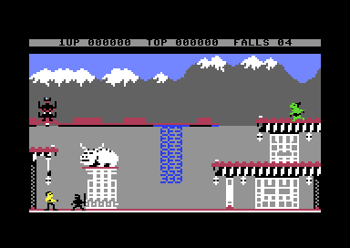
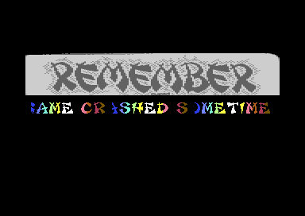
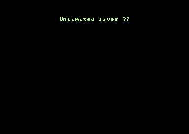
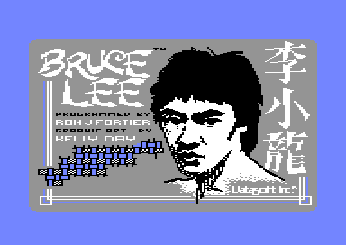
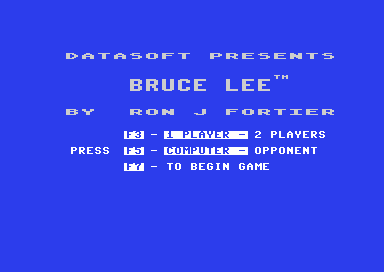

<meta charset="utf-8">
<meta name="viewport" content="width=device-width, initial-scale=1">
<title>{{title}}</title>
<link rel="preconnect" href="https://fonts.googleapis.com">
<link rel="stylesheet" href="https://fonts.googleapis.com/css2?family=Lato:wght@400;700;900&family=IBM+Plex+Mono:wght@400;500&display=swap">
<style>
:root{
  --bg:#23262d; --paper:#e9e7e1; --surface:#ffffff; --surface-2:#f1efea; --line:#d5d3cc; --line-soft:#e0ded8;
  --ink:#2f3136; --ink-soft:#55585f; --ink-mute:#80838a;
  --link:#1f5fa8; --link-hover:#154480; --accent:#1f5fa8;
  --amber:#c25a00; --cyan:#1f5fa8; --coral:#d04a3a; --green:#2a8a4a; --violet:#4a5bd6; --hl:#fff0c2;
  --chip:#2f3136; --chip-ink:#ffffff;
  --c64blue:#40318d; --c64grey:#686868;
  --fd:'Lato',system-ui,sans-serif; --fb:'Lato',system-ui,sans-serif; --fm:'IBM Plex Mono',ui-monospace,Menlo,monospace;
  --col:1080px; --gx:68px; --fs:17px; --lh:1.6; --hw:900; --h1:46px; --h2:26px; --sy:48px; --pp:26px; --r:10px;
  --plate-shadow:0 1px 2px rgba(0,0,0,.05),0 4px 14px rgba(0,0,0,.05);
}
*{box-sizing:border-box}
html{background:var(--bg);min-height:100%}
body{background:var(--paper);color:var(--ink);font-family:var(--fb);font-size:var(--fs);line-height:var(--lh);max-width:var(--col);margin:0 auto;min-height:100vh;padding:0 0 4rem}
h1,h2,h3{font-weight:var(--hw);letter-spacing:-.01em;text-wrap:balance;color:var(--ink);margin:0}
.wrap{padding:0 var(--gx)}
.hero{padding:48px var(--gx) 8px;text-align:left}
.eyebrow{font-family:var(--fm);font-size:12px;letter-spacing:.08em;text-transform:uppercase;color:var(--ink-mute);margin:0 0 10px}
.hero h1{font-size:var(--h1);line-height:1.15;letter-spacing:-.02em;margin:0 0 14px}
.hero .sub{margin:0 0 .6em;color:var(--ink-soft)}
section{padding:var(--sy) 0 24px}
section:last-of-type{border-bottom:none}
.fig{font-family:var(--fm);font-size:12px;letter-spacing:.08em;text-transform:uppercase;color:var(--ink-mute);margin:0 0 10px}
h2.t{font-size:var(--h2);margin-bottom:12px}
.lede{color:var(--ink-soft);margin:0 0 30px}
.plate{background:var(--surface);border:1px solid var(--line);border-radius:var(--r);padding:var(--pp);box-shadow:var(--plate-shadow)}
.cap{font-size:14px;color:var(--ink-mute);margin-top:14px;line-height:1.55}
.cap b{color:var(--ink);font-weight:700}
code{font-family:var(--fm);font-size:.82em;background:var(--chip);color:var(--chip-ink);border-radius:4px;padding:2px 6px;overflow-wrap:break-word;-webkit-box-decoration-break:clone;box-decoration-break:clone}

</style>
<!--
  Template for a game article. Keep it self-contained: inline CSS and JS,
  fonts are the only external resource, opens from disk. The section below
  shows the parts a section is made of, not which section comes first: the
  kinds of section are listed in kit/skills/core/70-minisite, in no order,
  and this page's order is its own. The best thing to press or hear goes
  as high as the explanation lets it, and every section should have
  something the reader can press. Copy follows kit/style.md and is written
  last.
-->
<!-- tabs -->
<header class="hero">
  <p class="eyebrow">{{year}} · {{publisher}}</p>
  <h1>{{title}}</h1>
  <p class="sub">A one-screen climbing and fighting game in twenty chambers, shown here from a disk that wraps the game in a cracker's intro, a text page and two cheat questions.</p>
</header>
<main class="wrap">
<section>
  <p class="fig">01 · The game</p>
  <h2 class="t">Twenty chambers and two enemies</h2>
  <p class="lede">Bruce Lee climbs through a wizard's fortress, collects lanterns to open doors, and fights a black Ninja and a green sumo-style fighter called Yamo.</p>
  <div class="plate"><p class="cap"><b>Room one, in play.</b> The status line reads score, top score and <code>FALLS</code>, with 04 on it at the start. The joystick is read from port 2.</p></div>
  <p>The game's own text page lists twenty secret chambers to explore, animation and "unique multiple player options". C64-Wiki adds that collecting every lantern in a chamber opens its doors, that the Ninja falls to two kicks and Yamo to three, and that Yamo can kick in mid-jump. In a two-player game, the second player controls Yamo or takes turns as Bruce. These details come from the wiki and the text page; the code behind them is not read yet.</p>
</section>
<section>
  <p class="fig">02 · Getting to the game</p>
  <h2 class="t">Screens before the first room</h2>
  <p class="lede">This disk holds a crack by the group Remember, so the game starts after the crackers' own front end.</p>
  <div class="plate"> <p class="cap"><b>Left, the Remember intro. Right, the first of two trainer questions.</b> Answering <code>N</code> to both plays the game unchanged.</p></div>
  <p>The single file is a BASIC stub (<code>SYS 2059</code>) that copies a short stub to the zero page and stack, and that stub unpacks the rest of the program. After the intro, a text page and the game's loading picture, a copy loop at <code>$C60C</code> moves a block from <code>$C000</code> down to <code>$0400</code> and jumps there. That jump lands on the first instruction of the game's own code, <code>$0400</code>.</p>
  <div class="plate"> <p class="cap"><b>Left, the loading picture. Right, the game's menu.</b> The picture credits Ron J. Fortier for the program, Kelly Day for the graphic art, and Datasoft. <code>F3</code> and <code>F5</code> pick the number of players and the opponent; <code>F7</code> begins.</p></div>
</section>
<section>
  <p class="fig">03 · What the code shows so far</p>
  <h2 class="t">The machine in play</h2>
  <p class="lede">The first findings, from the register census and the string sweep.</p>
  <p>In play the processor port is <code>$01</code> = <code>$35</code>, with both ROMs out, so the interrupt vector at <code>$FFFE</code> points into RAM at <code>$1103</code>. That handler saves the registers and jumps through a pointer held at <code>$0408</code>. The picture is a multicolour bitmap in video bank 2, with the bitmap at <code>$A000</code> and the screen colours at <code>$9C00</code>. The sound code names itself at <code>$E314</code> as the "Micropearl Music Player", copyright 1983 John A. Fitzpatrick, and writes all three SID voices.</p>
  <p>The code map from a minute and a half of play holds 8,317 bytes of code in 192 runs; most of the rest of the program is not yet described. Every feature in <code>features.md</code> is open except the controls, which were exercised in room one.</p>
</section>
</main>
<footer style="margin:16px 0 0;padding:22px var(--gx) 0;border-top:1px solid #e0ded8;font-family:'IBM Plex Mono',ui-monospace,Menlo,monospace;font-size:12px;color:#80838a"><a href="https://github.com/gamesexplained/gamesexplained" style="color:#1f5fa8;text-decoration:none">GitHub</a> · <a href="https://discord.gg/3V9GWyRDWV" style="color:#1f5fa8;text-decoration:none">Discord</a><br>© Games Explained contributors. Write-ups, facts and symbol maps are available under <a href="https://creativecommons.org/licenses/by-sa/4.0/" style="color:#1f5fa8;text-decoration:none">CC BY-SA 4.0</a>; code under <a href="https://opensource.org/licenses/MIT" style="color:#1f5fa8;text-decoration:none">MIT</a></footer>
<script>
// Inline everything. Data extracted from the snapshot goes here as arrays.
</script>
